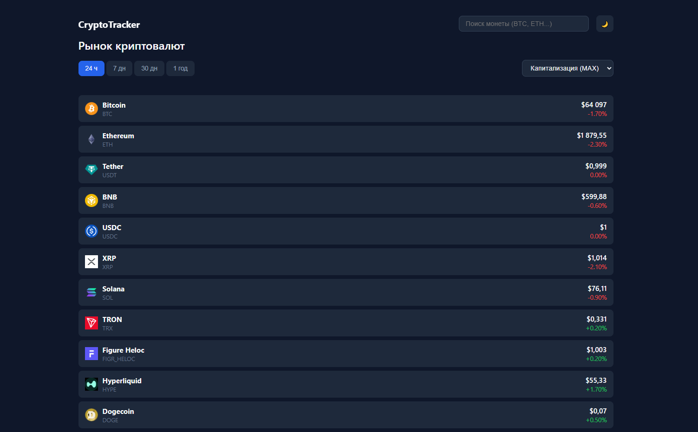
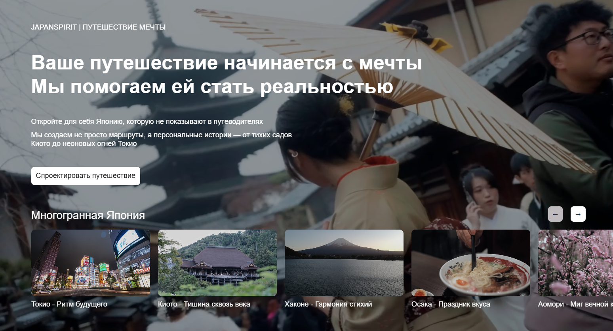

Чурцев Константин
Frontend / React Developer
- React.js
- JavaScript (ES6+) / TypeScript
- HTML5 / CSS3 / SASS / SCSS
- REST API / Axios / Fetch
- Node.js / Yandex Cloud
- Git
- Figma / Photoshop
Желаемая позиция: Junior+ / Middle Frontend Developer
Получение позиции Frontend / React Developer для применения и расширения опыта в коммерческой разработке SPA и веб-приложений. Нацелен на работу в командах с использованием современного стека React, TypeScript и актуальных State Manager’ов, где смогу приносить пользу продукту и расти профессионально
Формат: удаленно или офис
Город: Екатеринбург
Коммерческий опыт
Фриланс / Frontend & React Developer
Сентябрь 2025 — настоящее время
- Разработка SPA и веб-приложений: Проектирование компонентной архитектуры на React, управление локальным и глобальным состоянием, интеграция REST API
- Сетевой слой и асинхронность: Оптимизация работы с API, организация кэширования и фонового обновления данных, обработка асинхронных состояний (загрузка, ошибки, повторные запросы)
- Проектирование и верстка: Верстка сложного, адаптивного UI по Figma с соблюдением методологии BEM (SCSS / CSS Modules). Реализация кастомных анимаций, видео-бекграундов и динамических интерфейсных элементов без сторонних зависимостей
- Инженерная и алгоритмическая база: Разработка систем управления состоянием и архитектурных модулей на C# (Unity). Проектирование структур данных и клиент-серверного взаимодействия
Компания «BLIZKO» (маркетплейс)
Январь 2023 — Сентябрь 2025
- Разработка интерфейсов: Полный цикл разработки лендингов от верстки по макетам Figma до внедрения на продакшен. Реализация интерактивных элементов (карусели, модальные окна, формы) на чистом JavaScript
- Разработка бэкенд-логики: Перенес систему сбора данных с Google Apps Script на сервисы Яндекс.Облака (Cloud Functions, YDB), обеспечив отказоустойчивость сбора метрик. Занимался парсингом данных с внешних API
- Оптимизация: Автоматизировал процесс создания баннеров, верстки типовых страниц и email-рассылок
Сбербанк — SQL Developer (практика)
Июнь 2020 — Июль 2020
- Сбор и визуализация данных
- Работа с SQL-запросами
Обо мне
Образование: Магистр по направлению «Прикладная информатика» (УрФУ, ИМКН), 2022 год
Отношение к делу: Фокусируюсь на компонентном подходе, чистой архитектуре и предсказуемом управлении состоянием. Имею практический коммерческий бэкграунд (3 года в e-commerce / маркетплейсах), благодаря чему глубоко понимаю бизнес-логику, интеграцию с бэкендом и верстку любой сложности. Спокойно восприятие код-ревью и конструктивный фидбек
Примеры работ
CryptoTracker (2026)
Веб-приложение для отслеживания криптовалютных данных в реальном времени
- Интерактивные графики с использованием библиотеки Lightweight Charts
- Адаптивный интерфейс и оптимизация под мобильные устройства
- Асинхронная работа с REST API (Axios / Fetch) для получения рыночных метрик
- Компонентный подход, кастомные хуки и управление состоянием
- Деплой и настройка CI/CD через GitHub Pages

Japan Dream Story (2026)
Лендинг с кастомной логикой без сторонних библиотек
- Горизонтальный скролл - sticky + transform архитектура
- Видео бекграунд
- Замороженные видео примеры
- Адаптивная верстка
- Валидация форм
- Чистая структура JS

Interactive Gallery (2026)
Галерея с кастомной системой autoplay и управлением состоянием
- Модульная JS-архитектура
- Page Visibility API
- Без зависимостей

Simple Layout (2026)
Простая адаптивная целевая страница
- Без сторонних библиотек
- Адаптивная верстка

Blizko — Cases Page (2025)
Коммерческая страница кейсов с динамическим выводом и фильтрацией проектов
- Динамическая генерация карточек из JS-данных
- Переключение категорий кейсов (табы)
- Фильтрация контента без перезагрузки страницы
- Работа с формой обратной связи
- Логика управления состоянием интерфейса
- Адаптивная верстка